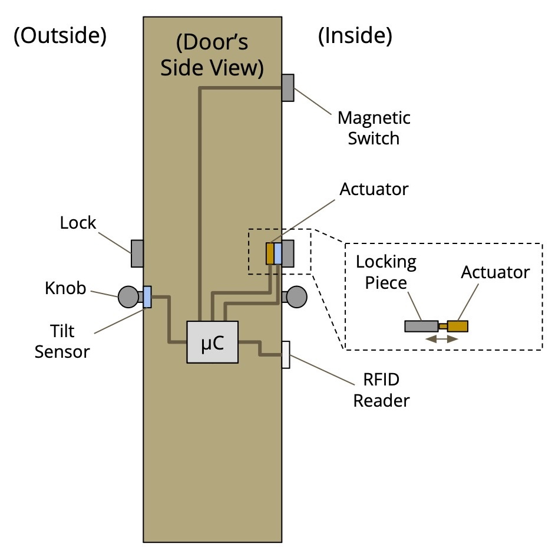
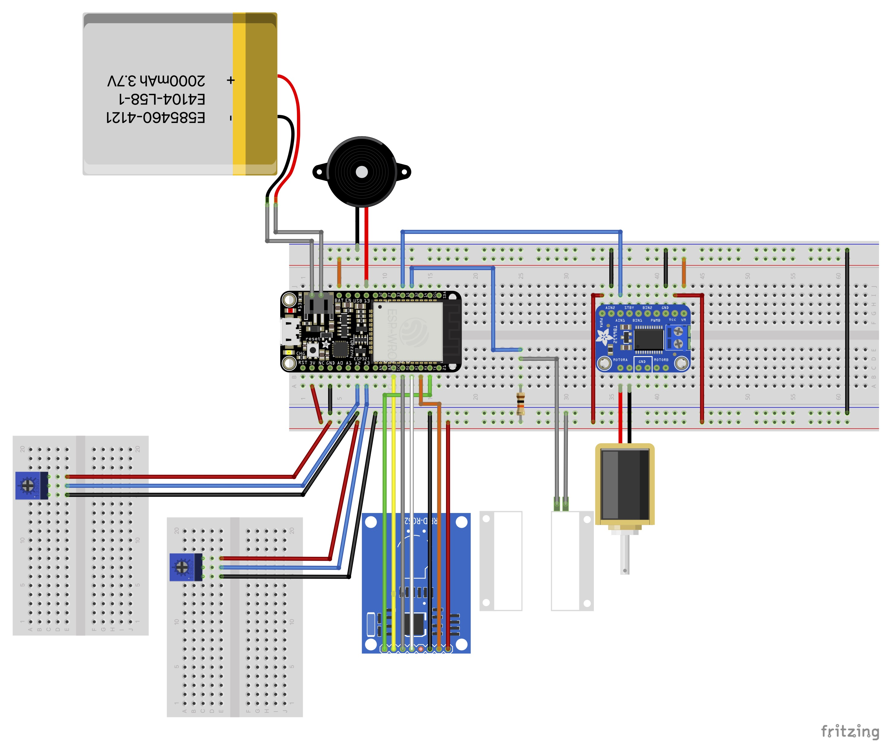
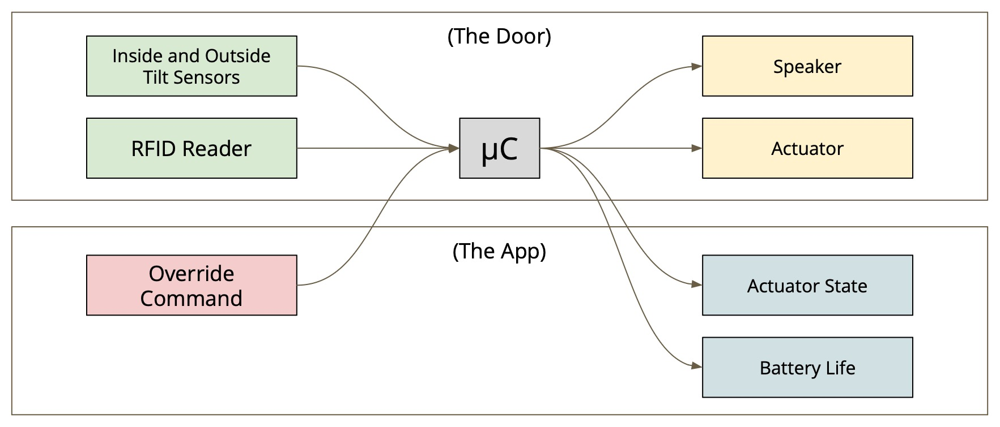
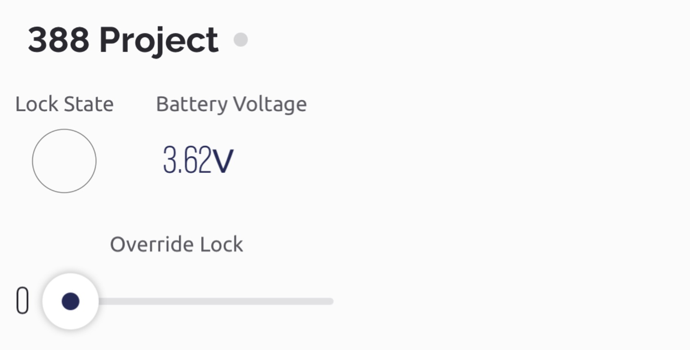
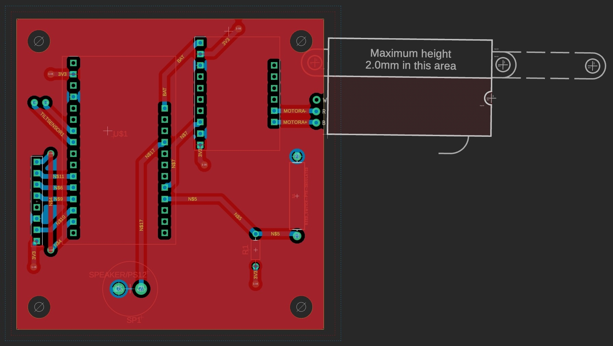
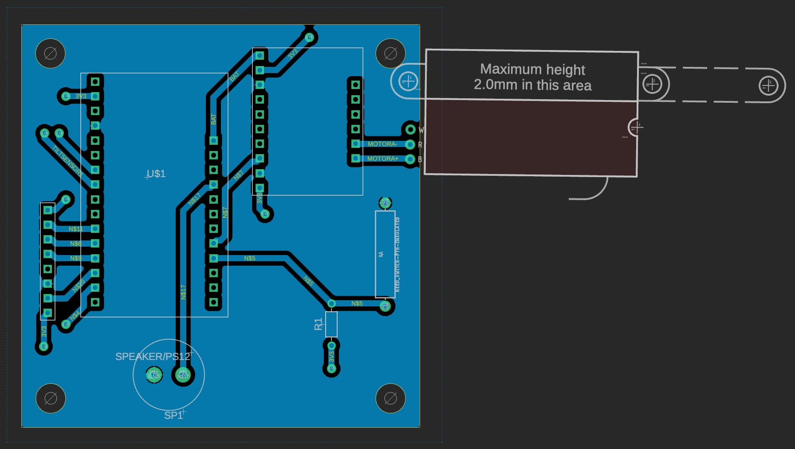
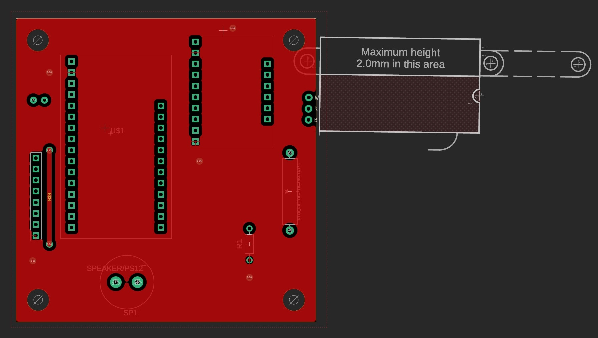
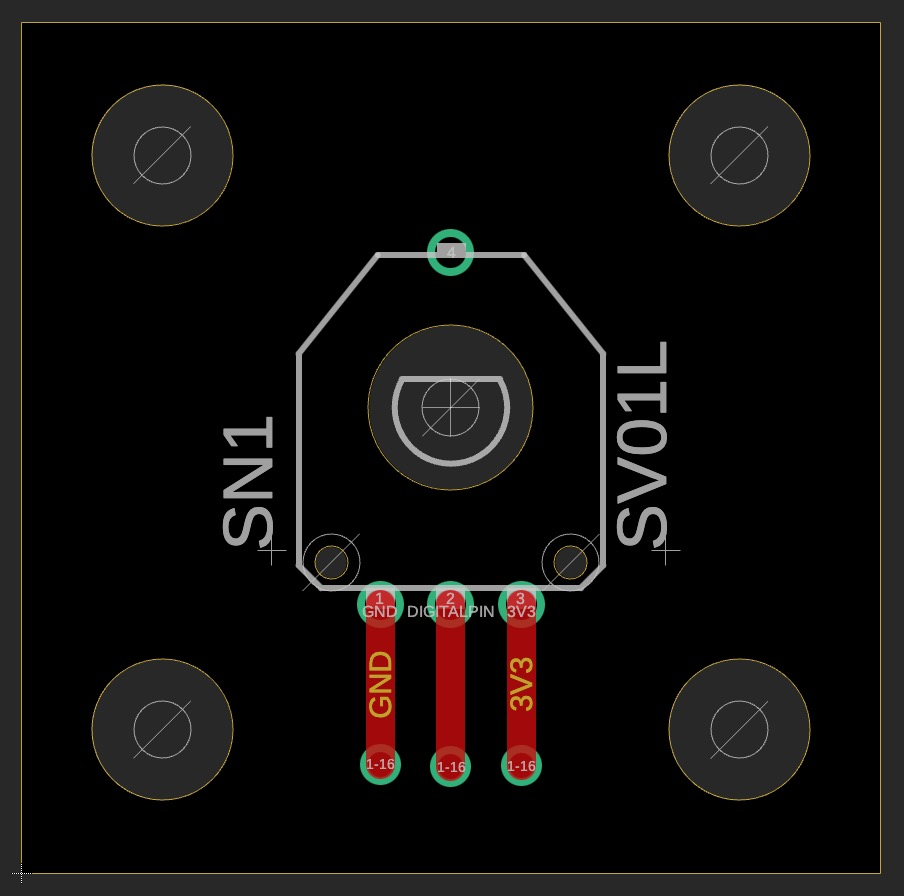
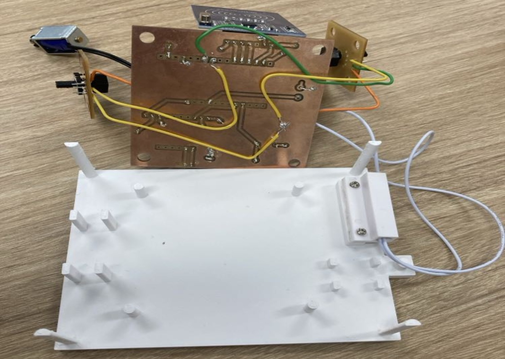
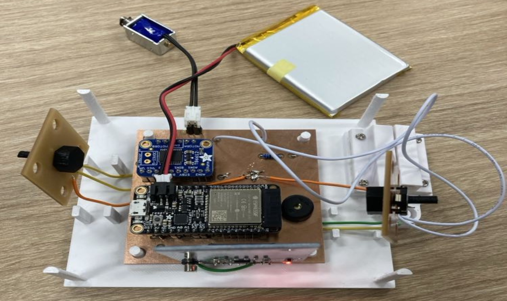

Create a smart door lock for children and seniors who tend to wander off.
A class in Spring 2024 required us to form groups and come up with a project that contains a system of at least two connected devices.
First, we had to figure out which how the smart lock would actually work, and what it would be connected to. We eventually arrived at the following characteristics:
| Implementation Schematic | Breadboard Schematic |
|---|---|
|  |  |
| Data Flow |
|---|
|  |
After we finalized the structure of the smart lock, we divided the work such that Kenneth and I were in charge of the software, Sam was in charge of the circuit schematics and PCBs, and I was in charge of 3D-printing any pieces for holding the PCBs. However, we would help each other out when needed. In the final stretch, we saw that the soldering would be a one-person job. Because I had some prior experience with soldering before the class, I took on that task.
The project worked as intended, and we were able to give a live demo during the class. The code has been uploaded to a GitHub repository for the class deliverable, but I tidied up the repository and added the hardware-related files a couple months later.
We used Blynk for the app connectivity aspect, and created the following interface on the app:
We decided to have the tilt sensors on separate PCBs so they could be perpendicular to the main board, allowing us to have our prototype resemble our schematic. Our final iteration of the PCBs are shown below, along with the final prototype.
| Main Board (All) |
|---|
|  |
| Main Board (Bottom) |
|  |
| Main Board (Top) |
|  |
| Tilt Board (All) |
|---|
|  |
| Final Prototype (Bottom) |
|---|
|  |
| Final Prototype (Top) |
|  |